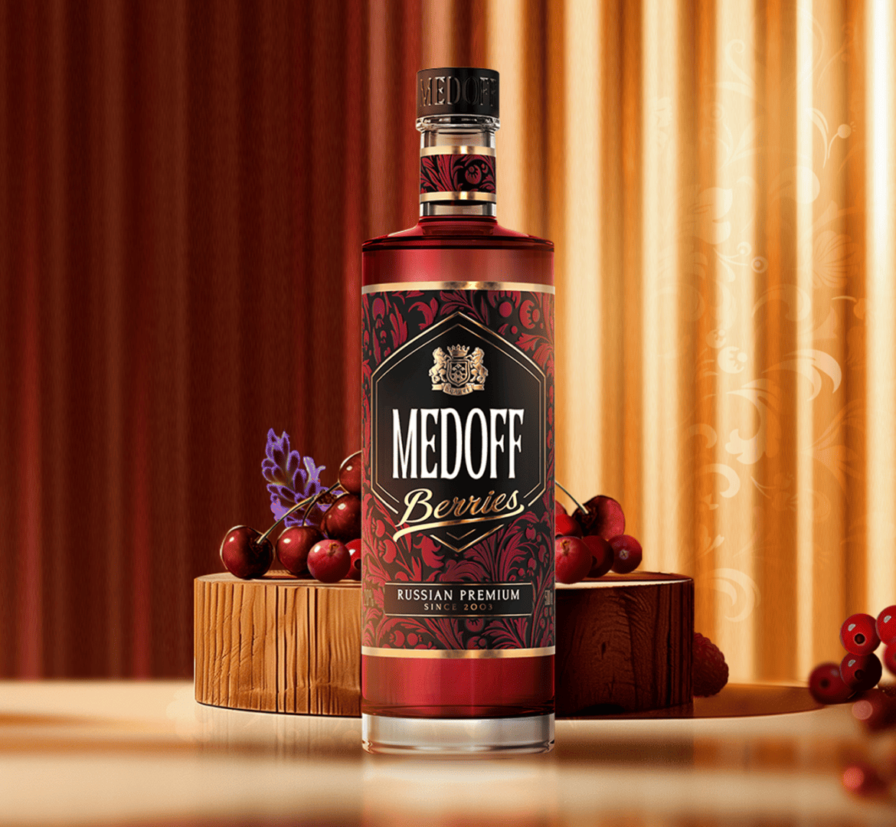

СОЗДАНИЕ ПРЕМИАЛЬНОЙ ВОДКИ
Водка MEDOFF производится исключительно на собственном заводе «КВК групп» в г.Симферополе.
Наша особая гордость — экспертная команда технологов, супруги Людмила и Сергей Григоренко — легенды алкогольной индустрии.
За их плечами десятки лет опыта, индустриальные патенты и множество успешных продуктов, завоевавших любовь потребителей.
Вода из горного водохранилища проходит специальную десятиступенчатую систему подготовки, фильтрация через минералы горного хрусталя придает ей родниковый вкус, обеспечивая безупречное качество готовой водки MEDOFF.
MEDOFF обогащается натуральными локальными ингредиентами.
Настоящий цветочный мед, экстракты крымских трав и растений. Также применяется технология очистки мёдом, которую изобрели технологи завода компании «КВК групп» в 2003 году.
В основе MEDOFF только премиальный спирт «Альфа», получаемый исключительно из зерновых культур.
Он не имеет выраженного «спиртового» запаха и посторонних тонов.

MEDOFF BERRIES
Восхитительно вкусная сладкая настойка MEDOFF BERRIES создана для истинных гурманов. Ароматный ягодный букет и лёгкая кислинка красных ягод дополнена эфирным маслом крымской лаванды, которое гармонично завершает композицию вкусов деликатной свежей ноткой.
Крепость: 20%
Объем: 0,25 л; 0,5 л
MEDOFF CAYENNE
Горькая настойка с повышенным уровнем крепости в 45 градусов для решительных и сильных духом. MEDOFF CAYENNE гарантирует яркие впечатления, незабываемую палитру вкусов
с богатым пряным ароматом, оттенками кофе, лимона и приятным согревающим послевкусием.
Крепость: 45%
Объем: 0,25 л; 0,5 л
MEDOFF CОВРЕМЕННЫЙ РУССКИЙ ШИК
Премиальная русская водка обладает восхитительно бархатным и мягким вкусом, благодаря изысканному сочетанию высококачественных спиртов и особо ценного ингредиента - натурального меда.
Роспись в стиле хохломы подчеркивает уникальность и аутентичность водки.
Дизайн бутылки уникален - украшение эмбоссингом (объёмным рисунком), колпак, оснащенный контролем вскрытия.
Крепость: 40%
Объем: 0,25 л; 1 л
Поздравляем Вы изучили основную информацию по бренду Medoff
Готовы проверить себя?
Ответьте на 7 вопросов, это поможет закрепить полученные знания.
Перейти к тесту